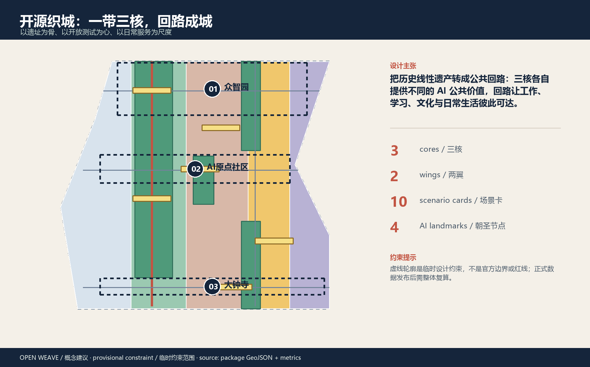
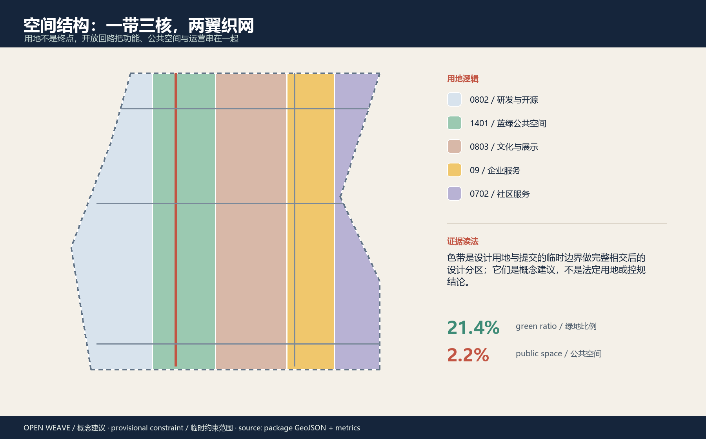
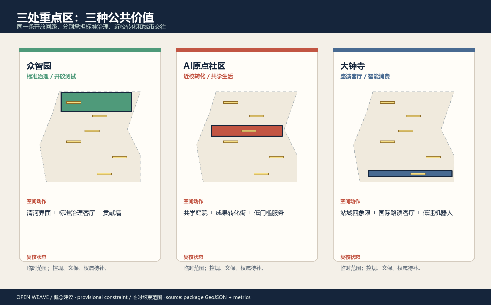
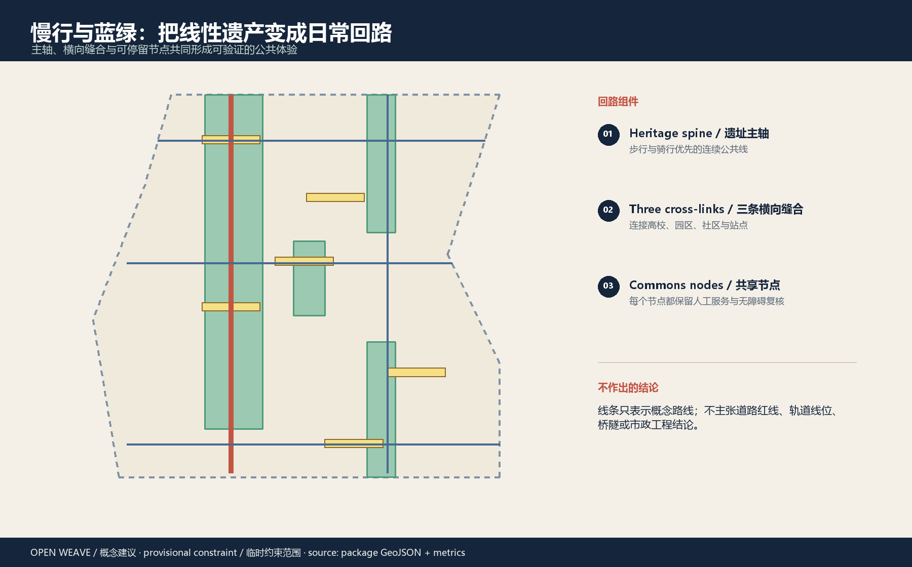
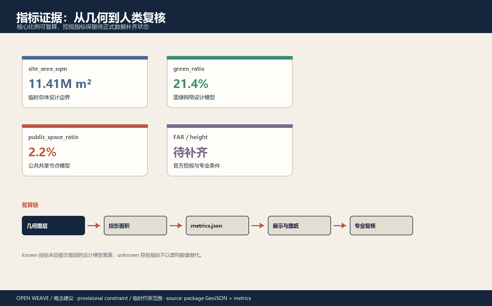

离线城市设计证据展板
开源织城 / 百年京张 AI Civic Loop
遗址主轴 · 开放测试 · 日常服务
临时约束范围：本页是概念方案包，不是官方红线或审定规划。
11.41M m²总体设计面积
21.4%绿地比例
2.2%公共空间
10AI 场景卡
4AI 朝圣节点





空间效果图 · Perspective renderings
四张 AI 生成并本地编辑的概念效果图用于表达空间尺度、材料、日常运营氛围和 AI 的可见服务载体：慢行导航节点、模型测试沙盒、共学工作台、有人值守的 AI 终端。它们不是现状照片、官方效果图或最终建筑定稿。


任务覆盖 · 六项智能体任务 · 自检状态
三层范围: 统筹研究 · 总体设计 · 三处重点区
更新项目: 八个参考项目包，分期供专业团队复核
总体概念与视觉识别PASS
AI 创新生态PASS
AI+ 场景与用户PASS
公共空间与朝圣节点PASS
文化融合叙事PASS
全球活动与长期运营PASS
证据与限制 · 假设
来源来自公开或清权资料。临时 polygon 只用于设计讨论，正式数据到位后必须替换并整体复算。容积率、建筑高度、权属、道路红线、市政和文保控制仍待补齐。
下一步必须做什么
- 用官方或清权 geometry 替换临时总体边界和重点区 polygon。
- 重新复算全部图层、指标、图件、PDF、HTML 和 manifest 哈希。
- 完成专业、文保、无障碍、安全和公众参与复核。
AI 运行协议 · 五道可撤回闸门
AI 只提供可审计建议，不自动替代规划、公共服务或专业判断。未完成任一闸门时，场景只能停留在桌面推演。
0 · 公开问题问题卡、受益人、来源与版权
1 · 最小数据授权边界、保留期限、偏差风险
2 · 人工复核专业意见、公众反馈、限制提示
3 · 可撤回试点值守、告知、投诉入口、回滚脚本
4 · 公共复盘成功、失败、退出、修订和下一步
实施矩阵 / Implementation matrix
| 项目包 | 首轮证据 | 阶段闸门 |
|---|---|---|
| JZ-01 慢行断点 | 连续路线 + 无障碍走查 | 走查不过则保留人工引导 |
| JZ-03 近校转化街 | 首层开放 + 人工服务清单 | 权属/消防未确认不固定改造 |
| JZ-05 公共服务节点 | 服务、算力、能耗需求表 | 无值守/回滚能力不开放试点 |
| JZ-07 低速机器人 | 测试场地 + 安全清单 | 越界或事故立即停测 |
| JZ-08 活动路线 | 容量、无障碍、安全、版权清单 | 清单不完整不发布公众路线 |